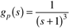
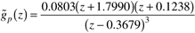

Consider the third-order process (where the time unit is minutes, and the gain is %/%)

which has no zeros (that is, it is minimum phase). If the model is perfect, we know that a continuous-time controller can be tuned arbitrarily tightly.
If the continuous model is discretized with a sample time of 1 minute, the discrete-time model (in factored form) is

Notice that one of the process zeros is at –1.7790 (outside the unit circle); if the inverse of the model is used for controller design, an unstable controller results. It is interesting that the continuous-time model has no RHP zero, yet the discretized model has a zero outside the unit circle.
Consider factorizations for the discrete IMC design when (a) the zero at –1.7990 is not factored out, and (b) the zero at –1.7990 is factored out. Compare the two digital controllers and continuous IMC performances on a unit step setpoint change. Study various values of the IMC tuning parameter, l. |